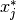
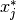

Composite parametric prediction¶
The parametric estimator model or composite parametric strategy uses classical estimators to predict the defining parameters of continuous distributions. The idea is that the prediction of a normal distribution can be brought down to a prediction of its defining parameters mean  and standard deviation
and standard deviation  (or location and scale
(or location and scale  for a Laplacian distribution etc.). More general, classical prediction algorithms can be used to obtain point and variance estimates that are plugged into the definition of various distribution types (e.g. Normal, Laplace etc.) that are consequently regarded as probabilistic predictions. The appropriate distributional type can be determined based on the data, for instance, by choosing the type that minimizes the probabilistic loss for given point and variance estimate.
for a Laplacian distribution etc.). More general, classical prediction algorithms can be used to obtain point and variance estimates that are plugged into the definition of various distribution types (e.g. Normal, Laplace etc.) that are consequently regarded as probabilistic predictions. The appropriate distributional type can be determined based on the data, for instance, by choosing the type that minimizes the probabilistic loss for given point and variance estimate.
Overview¶

Overview of the parametric estimation strategy (base classes are annotated in the dashed boxes): The probabilistic parametric estimator takes classical estimators that predict the defining parameters (point and std) of the given distribution type (e.g. mean and standard deviation for the normal distribution). In particular, the residual estimator can be used for the std prediction since it takes another classical estimator to predict residuals or variances of the point prediction. To implement simple strategies, the module offers a constant estimator that produces pre-defined constant predictions.
The composite parametric strategy is implemented by the ParametricEstimator object that currently supports two-parametric continuous distributions. It takes a point estimator (point), a variance estimator (std) and a parameter to define the assumed distribution form (e.g. ’norm’ or ’laplace’). During fitting (fit(X, y)) the parametric estimator automatically fits the provided point and variance estimators; accordingly, on prediction (predict(X)), it retrieves their estimations to compose the overall predicted distribution interface of the specified shape. The parametric model also supports combined estimation in which the same estimator instance is used to obtain both point and variance prediction. The combined estimator has to be passed to the optional point_std parameter while the point/std arguments can then be used to specify how point and variance prediction should be retrieved from it. Hence, the parametric estimator can be considered a function that maps the distribution interface onto the actual learning algorithms of the provided estimators.
Estimators¶
Since the implementation follows the estimator API of scikit-learn, it is generally possible to employ any of scikit-learn’s classical estimators as predictors. In fact, in this paradigm the same algorithm that is used to predict a housing price can be employed to obtain the point prediction which represents the mean of the predicted price distribution for the house. It is, however, an open question how the variance predictions that are understood to estimate the probabilistic uncertainty of these point predictions can be obtained.
An intuitive idea is to use the residuals of the point estimations, since they represent the magnitude of error committed during point prediction and hence suggest how correct or certain these predictions actually were. In the supervised setting, where the correct training labels  are provided, we can easily obtain the absolute training residuals
are provided, we can easily obtain the absolute training residuals  | of the point predictions
| of the point predictions  . Since training and test data are assumed to be i.i.d. sampled from the same generative distribution, we can estimate the test residuals based on the training residuals. More precisely, we fit a residual model using the training features and the calculated training residuals (
. Since training and test data are assumed to be i.i.d. sampled from the same generative distribution, we can estimate the test residuals based on the training residuals. More precisely, we fit a residual model using the training features and the calculated training residuals ( ,
,  ). Using the trained residual model, we are then able to estimate the test residuals
). Using the trained residual model, we are then able to estimate the test residuals  for given test features . Notably, the obtained residuals are the residuals of the distributional parameter estimation and not of the overall distribution estimate. It is, however, reasonable to assume that higher residuals in the prediction of the distribution’s parameter imply higher residuals of the overall distributional prediction. We thus regard as a prediction of the distribution’s deviation parameter (e.g. in
for given test features . Notably, the obtained residuals are the residuals of the distributional parameter estimation and not of the overall distribution estimate. It is, however, reasonable to assume that higher residuals in the prediction of the distribution’s parameter imply higher residuals of the overall distributional prediction. We thus regard as a prediction of the distribution’s deviation parameter (e.g. in  ), that is the variance prediction of the overall strategy. Note that we calculated the absolute residuals to account for the non-negativity of the variance. Alternatively, the strategy can be modified by fitting the squared or logarithmic training residuals to the residual model and back transforming the estimated test residuals using the square root and exponential function respectively. Such a residuals transformations can, for instance, be useful to emphasize or depreciate larger residuals, e.g. the influence of outliers in the data. Additionally, the residual strategy involves two distinct estimators, the point and the residual estimator, which are not necessarily of the same type. One could, for example, use a linear regression to obtain the point predictions while choosing a more sophisticated strategy to model the residuals of that regression (again using scikit-learn-like classical estimators that are passed in as parameters). The residual estimation strategy is implemented by the
), that is the variance prediction of the overall strategy. Note that we calculated the absolute residuals to account for the non-negativity of the variance. Alternatively, the strategy can be modified by fitting the squared or logarithmic training residuals to the residual model and back transforming the estimated test residuals using the square root and exponential function respectively. Such a residuals transformations can, for instance, be useful to emphasize or depreciate larger residuals, e.g. the influence of outliers in the data. Additionally, the residual strategy involves two distinct estimators, the point and the residual estimator, which are not necessarily of the same type. One could, for example, use a linear regression to obtain the point predictions while choosing a more sophisticated strategy to model the residuals of that regression (again using scikit-learn-like classical estimators that are passed in as parameters). The residual estimation strategy is implemented by the ResidualEstimator (RE) object.
In addition to the estimators in the scikit-learn library, the module provides a Constant (C) estimator that predicts a constant value which is pre-defined or calculated from the training data. The estimator is particularly useful for control strategies, e.g. a baseline that omits the training data features and makes an uninformed guess by calculating the constant mean of the dependent variable. With the given parametric API, classical estimators turn out be usable for the purposes of both point and residual prediction and consequently probabilistic prediction making. The following code example illustrates a resulting overall syntax that defines a baseline model using the parametric estimator. The predictions of such model would be normal distributions with mean  and a standard deviation that equals the mean of the absolute training residuals.
and a standard deviation that equals the mean of the absolute training residuals.
baseline = ParametricEstimator(
point=Constant(42), # Point estimator
std=ResidualEstimator( # Variance estimator
'point', # Base estimator
Constant('mean(y)'),# Residual estimator
'abs_error' # Calculation method
),
shape='norm' # Distribution type
)
Example¶
The extended example below shows the definition of a parametric model that uses a RandomForestRegressor as point estimator and the feature mean as variance predictor.
from sklearn.ensemble import RandomForestRegressor
from sklearn.datasets.base import load_boston
from sklearn.model_selection import train_test_split
from skpro.parametric import ParametricEstimator
from skpro.parametric.estimators import Constant
from skpro.metrics import log_loss
# Define the parametric model
model = ParametricEstimator(
point=RandomForestRegressor(),
std=Constant('std(y)'),
shape='norm'
)
# Train and predict on boston housing data
X, y = load_boston(return_X_y=True)
X_train, X_test, y_train, y_test = train_test_split(X, y, test_size=0.3)
y_pred = model.fit(X_train, y_train).predict(X_test)
# Obtain the loss
loss = log_loss(y_test, y_pred, sample=True, return_std=True)
print('Loss: %f+-%f' % loss)
For more details, read the module documentation.